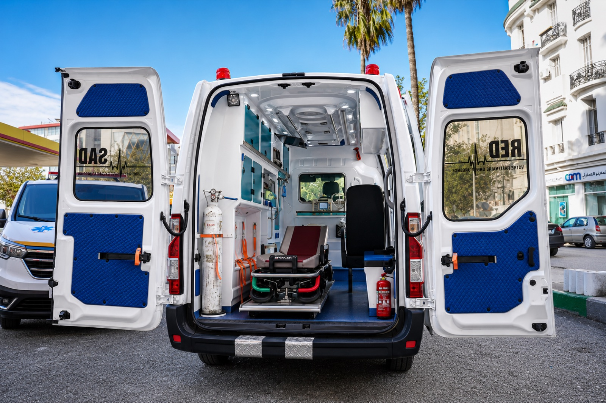
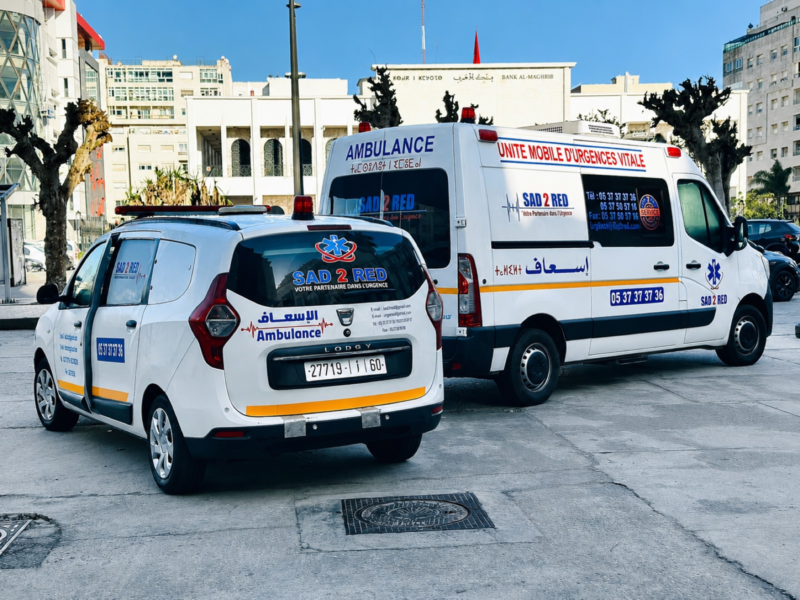
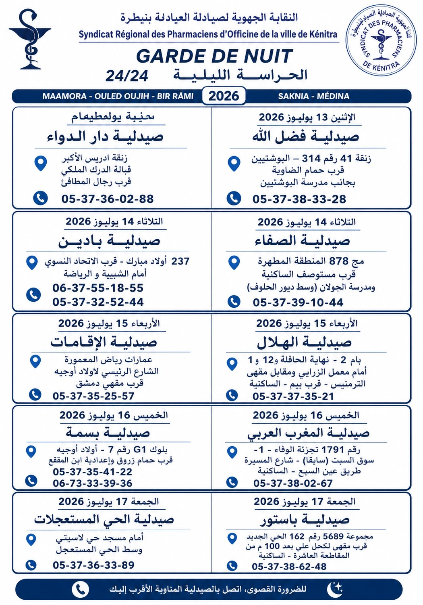

Médecin à domicile
Consultation, examen clinique et orientation.
Kenitra et région - appel ou WhatsApp
Médecin, ambulance, fourgon sanitaire, infirmier, kiné, couveuse et vitaminothérapie à domicile. Intervention selon disponibilité, localisation et circulation.
Activité principale : Kenitra et région.

Services
Une prise de contact simple, une orientation claire et le service le plus adapté à votre situation.
Consultation, examen clinique et orientation.
Transport ou assistance médicale rapide selon la situation.
Transport sanitaire adapté à Kenitra et région.
Solution équipée pour nouveau-né, selon disponibilité.
Soins, injections, pansements, perfusions selon prescription.
Rééducation, douleurs, mobilité et suivi fonctionnel.
Cocktails IV selon besoin, disponibilité et échange préalable.
Présence ambulance pour événements sportifs, éducatifs, mariages, fêtes et rassemblements.
Galerie
Photos des ambulances, fourgons et équipements mobilisables selon le besoin.

Pharmacies de garde
Information pratique affichée pour aider les familles à trouver rapidement une pharmacie ouverte.
La plupart des pharmacies à Kenitra sont ouvertes de 9 h à 20 h, du lundi au samedi. Cependant, il peut être difficile d’en trouver une ouverte le dimanche ou un jour férié. C’est pourquoi il est important de garder à portée de main les coordonnées d’une pharmacie de permanence en cas de besoin. Vous pouvez généralement trouver ces coordonnées dans la vitrine des pharmacies, sur notre site, ou en contactant les centres médicaux et les cliniques.

Hôpitaux & cliniques
Adresses, numéros et avis Google indicatifs pour mieux orienter les familles à Kenitra.
Route de Sidi Allal Bahraoui, Kenitra
Ouvert - horaires à vérifier Téléphone non disponible publiquementAvenue Mohammed VI, Kenitra
Ouvert - horaires à vérifier +212 5 37 36 96 96Kénitra, zone centrale
Ouvert - horaires à vérifier +212 5 37 31 34 34Avenue de l’Hôpital, Kenitra
Ouvert - horaires à vérifier +212 5 37 37 36 35 Urgences : +212 6 22 66 35 36148 Avenue Mohamed Diouri, Kenitra
Ouvert - horaires à vérifier +212 5 37 37 65 65Lotissement Al Qods 1 Lot C, en face d’Acima, Kenitra
Ouvert - horaires à vérifier +212 5 37 37 13 33 +212 5 37 37 36 42Avenue Abderrahim Bouabid, Kenitra
Ouvert - horaires à vérifier +212 5 37 39 79 3121 Avenue Mohamed El Qori, Kenitra
Ouvert - horaires à vérifier +212 5 37 37 97 9833 Rue Ibn Abi Zaraa, Avenue Moulay Abderrahmane, Kenitra
Ouvert - horaires à vérifier +212 5 37 36 67 67 +212 5 37 37 70 721 Rue Al Masjid, Kenitra
Ouvert - horaires à vérifier +212 5 37 36 62 77Avenue Moulay Youssef, Kenitra
Ouvert - horaires à vérifier +212 5 37 37 87 39Clinique de chirurgie orthopédique et traumatologique, Kenitra
Ouvert - horaires à vérifier +212 5 37 37 30 81116 Rue Maamora, Kenitra
Horaires à vérifier +212 5 37 36 55 00Avenue 2 Mars, Kenitra
Ouvert - horaires à vérifier +212 6 50 01 49 99Vitaminothérapie
Les cures sont à confirmer par téléphone ou WhatsApp selon votre situation. Certaines prises en charge peuvent nécessiter une indication ou un avis médical.
Pourquoi Medomicile
Contact rapide
Appelez Medomicile maintenant. Nous vous orientons vers le service adapté selon la situation.
Pour une situation vitale, la priorité est une prise en charge immédiate : contactez le service d’urgence adapté et appelez Medomicile pour organiser l’assistance ou le transport sanitaire.
Contact